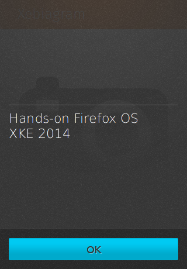
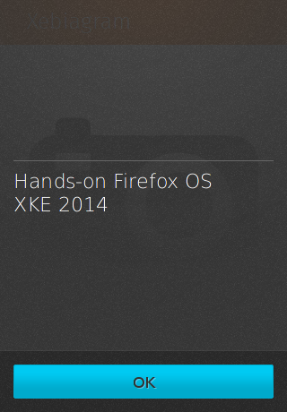

Durant cet atelier, vous allez découvrir Firefox OS, et créer une application similaire à Instagram permettant d'appliquer des filtres sur des photos.
#00a - Premiers pas avec Firefox OS
- Installez le simulateur et amusez vous avec Firefox OS (testez ce que vous voulez, prenez le temps de vous familiariser avec le système)
- Installez l'application Firefox OS Boilerplate et testez la
- Installez l'application Building Blocks et essayez la également.
#00b - Création du manifest
Vous allez créer une application pour Firefox OS en partant d'un projet de base :
{% highlight bash %}
$ git clone git@github.com:Nilhcem/xebia-fxos-workshop.git
$ cd xebia-fxos-workshop
$ git checkout master
{% endhighlight %}
Ce projet contient plusieurs fichiers (triés ici par importance) :
index.html La page principale de l'application, que vous aurez à modifierjs/app.js L'endroit où vous devrez écrire du code javascriptcss/app.css L'endroit où vous devrez mettre de nouvelles règles css (si besoin)img/ Contient les icones de l'application.css/buildingblocks La librairie css permettant de créer des éléments graphiques au look "natif" de la plateformejs/psxeffects*.js Une librairie (sources) simple d'utilisation permettant d'appliquer des filtres sur une image
L'application que vous venez de récupérer ne s'installe pas sur le simulateur car il manque le fichier manifest.webapp.
Votre but est le suivant :
- Créez le fichier manifest.webapp (aidez vous du code source des deux applications que vous avez téléchargé précédemment) en spécifiant un numéro de version, un nom d'application, une description, le fichier de lancement et l'emplacement des icones 60px et 128px
- Installez l'application sur le simulateur
- Testez la (cliquez sur les liens pour changer d'écran et vérifiez que ça fonctionne)
- Lisez le code source (
index.html, css/app.css, et js/app.js) pour bien comprendre comment s'effectue le changement d'écran

#01 - Ajout d'un header (ActionBar)
Vous allez maintenant rajouter un header (la barre orangée en haut) sur chaque écran.
- Sur le premier écran, affichez le nom de l'application
- Sur le second écran, ajoutez un bouton retour (et sa logique métier), un libellé ("Edit photo"), et deux boutons "Edit" et "Share" (qui n'ont pas besoin de logique métier pour l'instant).
N'hésitez pas à consulter la documentation pour savoir comment créer un header et pour choisir quelle icone afficher.


#02a - Ajout de boutons
Vous pouvez maintenant :
- Supprimer le contenu du premier écran (le lien tout moche "Go to page #2").
- Ajouter un bouton "About" qui affichera une dialog (un simple alert) contenant le texte que vous pouvez voir sur le screenshot ci-dessous
- Ajouter un autre bouton "Choose an image" sans logique métier pour l'instant
- Décorer la page d'une image de fond, si vous le souhaitez (facultatif)
 

#02b - WebActivity : Sélection d'image
On va maintenant rajouter la logique métier au bouton "Choose an image".
Lorsque l'utilisateur cliquera sur ce bouton, il faudra lancer une Web Activity de sélection d'image.
Une fois l'image sélectionnée, l'application doit passer automatiquement à l'écran #2 et afficher l'image choisie.
Vous devrez regarder le code source de l'application Firefox OS Boilerplate (ou la documentation officielle) pour savoir comment implémenter cette Web Activity.

#03a - Une dialogue de sélection
Vous allez maintenant rajouter de la logique métier au bouton "Edit" situé dans la barre de header du second écran de votre application.
Lorsque l'utilisateur cliquera sur ce bouton, une dialogue de sélection listant les effets disponibles pouvant être appliqués sur la photo doit apparaître.
L'utilisateur pourra choisir parmi les effets suivants :
- sepia
- blackwhite
- bluetone
- greentone
- solarize
- mosaic
- mirrorleft2right
Lorsque l'utilisateur cliquera sur un élément de cette liste, il faudra cacher cette liste et éxécuter du code Javascript pour appliquer un effet visuel à la photo.
Contentez vous, dans cette étape, de cacher la liste quand un élément est sélectionné.
Vous implémenterez la logique appliquant des effets visuels dans l'étape suivante.

#03b - Ajout d'effets visuels sur la photo sélectionnée
Afin d'appliquer des effets sur une photo, vous allez utiliser une librairie Javascript (déjà importée dans le projet).
Cette librairie a besoin de 2 éléments pour fonctionner :
- une
<img> (que vous avez déjà) et qui est l'image source
- un
<canvas> qui contiendra le résultat généré par la librairie.
La balise HTML5 <canvas> est utilisée pour dessiner des graphiques à la volée, sur une page web.
Commencez par rajouter un <canvas> dans le code html du second écran de votre application :
{% highlight html %}
{% endhighlight %}
Par défaut, le <canvas> est "hidden" pour n'afficher que l'image de base.
Lorsque l'utilisateur sélectionnera un filtre, vous cacherez l'image et afficherez le canvas à la place.
La méthode Javascript permettant d'appliquer un filtre sur une image à la définition suivante :
{% highlight javascript %}
function performEffect(type, orig, canvas);
{% endhighlight %}
type : nom de l'effet, parmi ceux listés dans l'étape #03a ('sepia', 'blackwhite' etc.)orig : l'élément <img> de votre page web contenant l'image de basecanvas l'élément <canvas> de votre page web qui contiendra l'image générée
Voici un exemple d'appel :
{% highlight javascript %}
var type = 'sepia';
var orig = document.querySelector("#original-image");
var canvas = document.querySelector("#canvas-image");
performEffect(type, orig, canvas);
{% endhighlight %}

#04 - Partage de l'image modifiée
Votre application permet maintenant d'appliquer un effet sur une image.
La dernière étape consiste à pouvoir partager cette image.
Pour cela, vous utiliserez une WebActivity (en s'inspirant encore une fois du code de partage d'image de Firefos OS Boilerplate).
Afin de tester que le partage fonctionne, partagez l'image avec le "Wallpaper" et cliquez sur "Set as wallpaper". Cliquez ensuite sur le bouton "Home" pour retourner sur l'écran d'accueil de Firefox OS, et admirez le résultat.
#05 - Peaufiner le tout
Il ne vous reste plus qu'à peaufiner votre application, et à apprendre plus sur le développement d'applications HTML5.
Si vous avez un peu de temps, voici quelques suggestions de choses à ajouter/tester pour améliorer votre application :
- Du remote debugging (lien)
- Des animations CSS (lien)
- De l'internationalisation (lien)
- Des tests unitaires (lien)
- Des tests fonctionnels (lien)
- Des traitements en background (lien)
- De la persistence (IndexedDB) (lien)
- Du cache (appcache) (lien)
- Un bouton d'installation, si l'app est utilisée depuis le navigateur (lien, lien)
- Une compatibilité multi-résolutions avec les média queries (lien)
- Une compatibilité multi navigateurs
- Une publication sur le Marketplace
- En vrac : testez volo, grunt, require js, coffeescript, less, sass...
~Have fun~